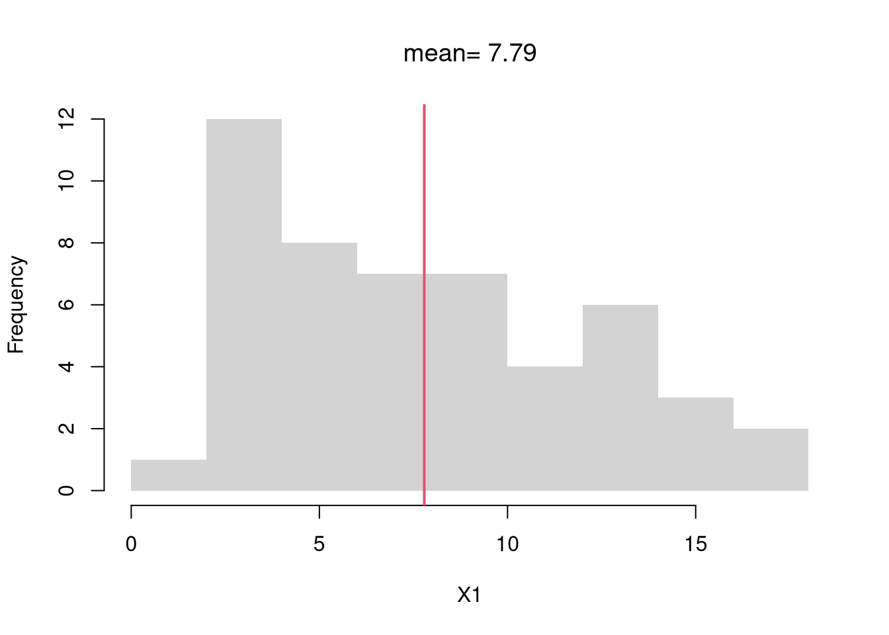

We often summarize distributions with statistics: functions of data. The most basic way to do this is with summary, whose values can all be calculated individually.
Code
# A random sample (real data)X <- USArrests[,'Murder']summary(X)## Min. 1st Qu. Median Mean 3rd Qu. Max. ## 0.800 4.075 7.250 7.788 11.250 17.400# A random sample (computer simulation)X <-runif(1000)summary(X)## Min. 1st Qu. Median Mean 3rd Qu. Max. ## 0.0005149 0.2460564 0.4984296 0.4958244 0.7629643 0.9989574# Another random sample (computer simulation)X <-rnorm(1000) summary(X)## Min. 1st Qu. Median Mean 3rd Qu. Max. ## -3.18524 -0.62375 0.10516 0.07157 0.75990 2.95815
Together, the mean and variance statistics summarize the central tendency and dispersion of a distribution. In some special cases, such as with the normal distribution, they completely describe the distribution. Other distributions are better described with other statistics, either as an alternative or in addition to the mean and variance. After discussing those other statistics, we will return to the two most basic statistics in theoretical detail.
5.1 Mean and Variance
The mean and variance are the two most basic statistics that summarize the center and how spread apart the values are.
Mean.
Perhaps the most common statistic is the mean, which is the [sum of all values] divided by [number of values]; \[\begin{eqnarray}
\bar{X}=\frac{\sum_{i=1}^{N}X_{i}}{N},
\end{eqnarray}\] where \(X_{i}\) denotes the value of the \(i\)th observation.
Note
For example, a dataset of \(\{1,4,10\}\) has a mean of \([1+4+10]/3=5\).
Code
X <-c(1,4,10)mean(X)## [1] 5
Code
# compute the mean of a random sampleX1 <- USArrests[,'Murder']X1_bar <-mean(X1) #sum(x)/length(x)X1_bar## [1] 7.788# visualize on a histogramhist(X1, border=NA, main=NA)abline(v=X1_bar, col=2, lwd=2)title(paste0('mean= ', round(X1_bar,2)), font.main=1)

Variance.
Perhaps the second most common statistic is the variance: the average squared deviation from the mean \[V_{X} =\frac{\sum_{i=1}^{N} [X_{i} - \bar{X}]^2}{N}.\] The standard deviation is simply \(s_{X} = \sqrt{V_{X}}\), which can be interpreted as the average distance from the mean.
Note
For example, a dataset of \(\{1,4,10\}\) has a mean of \([1+4+10]/3=5\). The variance is \([(1-5)^2+(4-5)^2+(10-5)^2]/3=14\) and the standard deviation is \(\sqrt{14}=3.742\).
Code
X <-c(1,4,10)x_bar <-mean(X)x_var <-mean( (X-x_bar)^2 )sqrt(x_var)## [1] 3.741657
Note that a “corrected version” is used by R and many statisticians: \(V_{X}' =\frac{\sum_{i=1}^{N} [X_{i} - \bar{X}]^2}{N-1}\) and \(s_{X}' = \sqrt{V_{X}'}\).
A general rule of applied statistics is that there are multiple ways to measure something. Mean and Variance are measurements of Center and Spread, but there are others that have different theoretical properties and may be better suited for your dataset.
Medians and Absolute Deviations.
We can use the Median as a “robust alternative” to means that is especially useful for data with asymmetric distributions and extreme values. Recall that the \(q\)th quantile is the value where \(q\) percent of the data are below and (\(1-q\)) percent are above. The median (\(q=.5\)) is the point where half of the data is lower values and the other half is higher. This means that median is not sensitive to extreme values (whereas the mean is).
X_extreme <-c(X, 1000) # add one extreme value#par(mfrow=c(1,2)) # visualize side-by-side#hist(X)#hist(X_extreme)# Which measures of central tendency are robust# to a single extreme value?mean(X)## [1] 1.22mean( X_extreme )## [1] 20.80392quantile(X, prob=0.5)## 50% ## 1quantile(X_extreme, prob=0.5)## 50% ## 1
Tip
Just like weighted means, we can also compute weighted quantiles
We can also use the Interquartile Range or Median Absolute Deviation as an alternative to variance. The difference between the first and third quartiles (\(q=.25\) and \(q=.75\)) measure is range of the middle \(50%\) of the data, which is how the boxplot measures “spread”. The median absolute deviation is another statistic that also measures “spread” \[\begin{eqnarray}
\tilde{X} &=& Med(X_{i}) \\
MAD_{X} &=& Med\left( | X_{i} - \tilde{X} | \right).
\end{eqnarray}\]
Code
#An alternative to sd(X)mad(X, constant=1) # median( abs(X - median(X)) )## [1] 1# Another alternative, used in the boxplotIQR(X) # diff( quantile(x, probs=c(.25,.75)))## [1] 2
Note that there other “absolute deviation” statistics
Code
# sometimes seen elsewheremean( abs(X -mean(X)) )mean( abs(X -median(X)) )median( abs(X -mean(X)) )
Mode and Share Concentration.
Sometimes, none of the above work well. With categorical data, for example, distributions are easier to describe with other statistics. The mode is the most common observation: the value with the highest observed frequency. We can also measure the spread of the frequencies or concentration at the mode vs elsewhere.
Central tendency and dispersion are often insufficient to describe a distribution. To further describe shape, we can compute skew and kurtosis to measure asymmetry and extreme values. There are many other statistics we could compute on an ad-hoc basis.
Skewness.
This captures how symmetric the distribution is. \[W_{X} =\frac{\sum_{i=1}^{N} [X_{i} - \bar{X}]^3 / N}{ [s_{X}]^3 }\]
Code
X <-rweibull(1000, shape=1)hist(X, border=NA, main=NA, freq=F, breaks=20)
You can also describe distributions in terms of how clustered the values are, including the number of modes and many other statistics. But remember that “a picture is worth a thousand words”.
Code
# Number of ModesX <-rbeta(1000, .6, .6)hist(X, border=NA, main=NA, freq=F, breaks=20)
You were already introduced to this with (random variables)[https://jadamso.github.io/Rbooks/random-variables.html] and probability distributions. In this section, we will dig a little deeper theoretically into the statistics we are most likely to use in practice.
The mean and variance are probably the two most basic statistics we might compute, and are often used. To understand them theoretically, we separately analyze how they are computed for discrete and continuous random variables.
Discrete Random Variables.
If the sample space is discrete, we can compute the theoretical mean (or expected value) as \[
\mathbb{E}[X_{i}] = \sum_{x} x Prob(X_{i}=x),
\] where \(Prob(X_{i}=x)\) is the probability the random variable \(X_{i}\) takes the particular value \(x\). Similarly, we can compute the theoretical variance as \[
\mathbb{V}[X_{i}] = \sum_{x} \left(x - \mathbb{E}[X_{i}] \right)^2 Prob(X_{i}=x).
\] The standard deviation is \(\sqrt{\mathbb{V}[X_{i}]}\).
Note
For example, consider an unfair coin with a \(.75\) probability of heads (\(x=1\)) and a \(.25\) probability of tails (\(x=0\)) has a theoretical mean of \[
\mathbb{E}[X_{i}] = 1\times.75 + 0 \times .25 = .75
\] and a theoretical variance of \[
\mathbb{V}[X_{i}] = [1 - .75]^2 \times.75 + [0 - .75]^2 \times.25 = 0.1875
\]
Code
# A simulation of many coin flipsx <-c(0,1)x_probs <-c(1/2, 1/2)X <-sample(x, 400, prob=x_probs, replace=T)round( mean(X), 4)## [1] 0.475round( var(X), 4)## [1] 0.25
Note
Consider a six-sided die with equal probability of landing on each side. What is the mean?
Sometimes, you may have a dataset of values and probability weights. Othertimes, you can calculate them yourself. In either case, you can explicitly do the computations for discrete data. Given data on unique outcome \(x\) and their frequency \(\widehat{p}_{x}=\sum_{i=1}^{N}\mathbf{1}\left(X_{i}=x\right)/N\), we compute \[\begin{eqnarray}
\bar{X} &=& \sum_{x} x \widehat{p}_{x}.
\end{eqnarray}\]
Code
# Compute probability weights for unique valuesP <-table(X) #table of countsp <-c(P)/length(X) #frequencies (must sum to 1)x <-as.numeric(names(p)) #unique valuescbind(x,p)## x p## 0 0 0.525## 1 1 0.475# Compute MeanX_mean <-sum(x*p)X_mean## [1] 0.475
Note
Try computing the mean both ways for another random sample
Code
X <-sample(c(0,1,2), 1000, replace=T)# First Way (Computerized)mean(X)## [1] 0.955# Second Way (Explicit Math)# start with a table of counts like the previous example
This idea generalizes to a weighted mean: an average where different values contribute to the final result with varying levels of importance. For each outcome \(x\) we have a weight \(W_{x}\) and compute \[\begin{eqnarray}
\bar{X} &=& \frac{\sum_{x} x W_{x}}{\sum_{x} W_{x}} = \sum_{x} x w_{x},
\end{eqnarray}\] where \(w_{x}=\frac{W_{x}}{\sum_{x'} W_{x'}}\) is normalized version of \(W_{x}\) that implies \(\sum_{x}w_{x}=1\).
Note that if there are \(K\) unique outcomes and \(W_{x}=1\) then \(\sum_{x}W_{x}=K\) and \(w_{x}=1/K\). This means \(\bar{X} = \sum_{x} x w_{x} = \sum_{x} x /K\), which is just a simple mean.
Tip
Bonus: provide an example of computing a weighted variance building on this code below
If the sample space is continuous, we can compute the theoretical mean (or expected value) as \[
\mathbb{E}[X] = \int x f(x) d x,
\] where \(f(x)\) is the probability the random variable takes the particular value \(x\). Similarly, we can compute the theoretical variance as \[
\mathbb{V}[X_{i}]= \int \left(x - \mathbb{E}[X_{i}] \right)^2 f(x) d x,
\]
For example, consider a random variable with a continuous uniform distribution over [-1, 1]. In this case, \(f(x)=1/[1 - (-1)]=1/2\) for each \(x\) in [-1, 1] and \[
\mathbb{E}[X_{i}] = \int_{-1}^{1} \frac{x}{2} d x = \int_{-1}^{0} \frac{x}{2} d x + \int_{0}^{1} \frac{x}{2} d x = 0
\] and \[
\mathbb{V}[X_{i}]= \int_{-1}^{1} x^2 \frac{1}{2} d x = \frac{1}{2} \frac{x^3}{3}|_{-1}^{1} = \frac{1}{6}[1 - (-1)] = 2/6 =1/3
\]